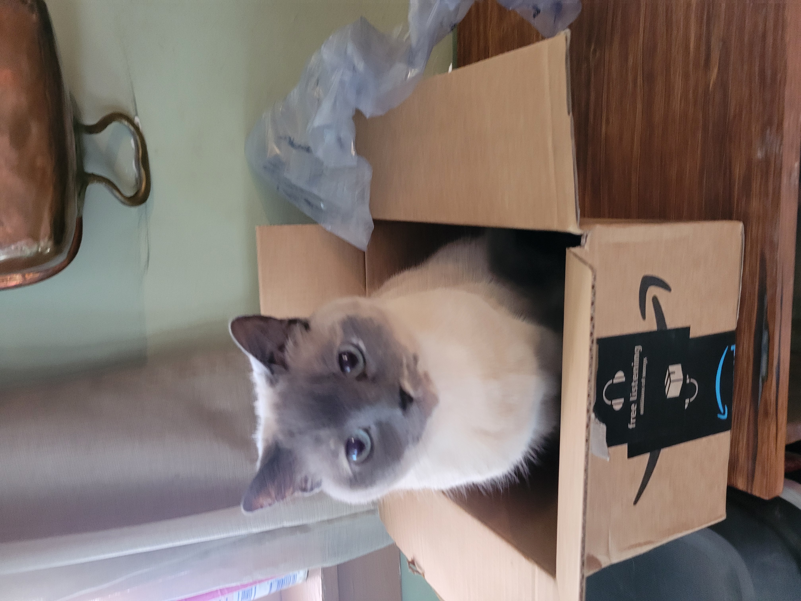
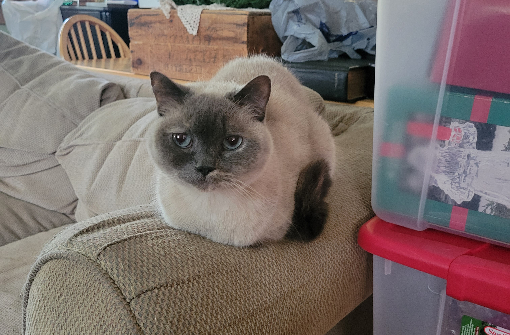
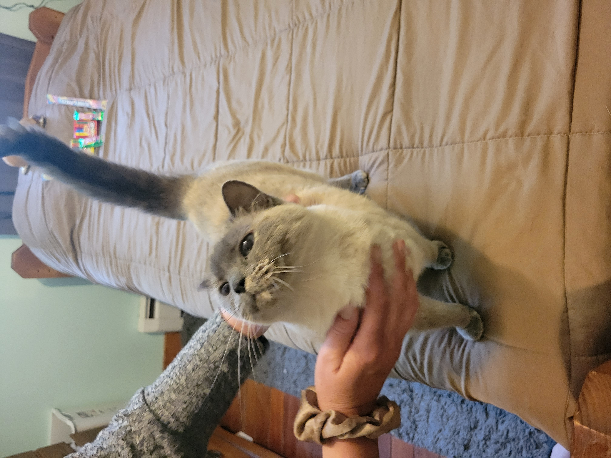
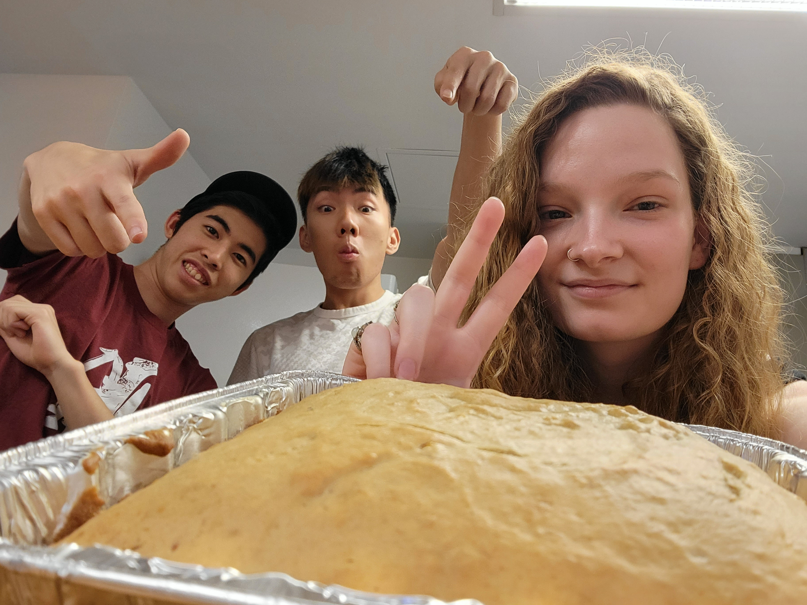

Heidi's Personal Library
Welcome to the local libary!
see some parts of my life from the past 3 years
2024
See this year's top 10 songs
See a picture of my cat this year

See a moment with my friends this year
2023
See this year's top 10 songs
See a picture of my cat this year

See a moment with my friends this year
2022
See this year's top 10 songs
See a picture of my cat this year

See a moment with my friends this year
